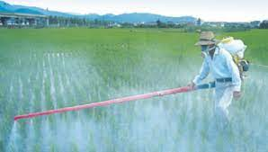

excesivo uso de fertilizantes
Con la cantidad de fertilizante adecuada, las plantas crecen y la cantidad de gases de efecto invernadero que se emite es mínima. Sin embargo, cuando hay tanto fertilizante que las plantas no son capaces de procesarlo y quedan restos de fertilizante almacenados en el suelo, las emisiones aumentan exponencialmente. Él uso de fertilizantes es un riesgo para el medio ambiente si se utilizan en exceso ya que el nutriente sobrante puede contaminar las aguas, superficiales o subterráneas. La contaminación más común es la generada por el nitrato que llega a las aguas por filtración o escorrentía. Si bien los fertilizantes químicos brindan nutrientes a las plantaciones agrícolas, si se abusa de ellos, pueden suponer un peligro para el medio ambiente. Y es que el excedente de nutrientes contamina suelos y aguas.
Esto se debe a las pautas de producción y utilización actuales, además de a una falta de gestión eficiente. Ello no es sostenible y, además, conlleva efectos negativos para la salud.

TIPOS DE FERTILIZANTES
La lista de fertilizantes que podemos usar en nuestros cultivos incluye
Fertilizantes orgánicos
Mejoran el suelo y le ayudan a retener agua y nutrientes. Tienen una base animal o vegetal y se descomponen lentamente.
Fertilizantes inorgánicos
Con una concentración más elevada de NUTRIENTES y, por lo tanto, resultados rápidos. En consecuencia, es muy importante controlar la dosis que se suministra para evitar daños en el suelo y la planta.
BIOFERTILIZANTES
Son compuestos con microorganismos vivos y ayudan a que la planta se desarrolle naturalmente.
FERTILIZANTES QUÍMICOS O MINERALES
Tienen resultados muy rápidos, pero pueden resultar negativos para el medio ambiente si no se aplican correctamente.
FERTILIZANTES QUELATADOS
Se caracterizan porque en su fórmula un ion de metal se une a una molécula orgánica. Son ricos en micronutrientes.
¿QUÉ RIEGOS USAR EN LOS CULTIVOS?
Igualmente, también es importante conocer los sistemas de riego que podemos aplicar en una explotación, tanto a la hora de proporcionarle el agua necesaria como de aplicar los correspondientes tratamientos.
EL RIEGO POR GOTEO
Permite que el agua se infiltre directamente en el suelo llegando a la zona de influencia radicular a través de un sistema de tuberías e irrigadores.
EL SISTEMA HIDROPÓNICO
Posibilita que las raíces de las plantas reciban directamente el agua, con sus correspondientes tratamientos.
EL RIEGO AUTOMÁTICO
Permite controlar el aporte de agua en el momento adecuado y con la periodicidad necesaria.
EL RIEGO POR ASPERSIÓN
Es el más adecuado para hacer un reparto homogéneo del agua teniendo en cuenta el clima y las necesidades de cada cultivo. Puede realizarse incluso con microaspersores para conseguir gotas muy finas que se distribuyan todavía mejor.
RIEGO POR NEBULIZACIÓN
Produce una niebla fina al trabajar con presiones relativamente elevadas.
Aplicar el sistema de riego más adecuado para las características de cada explotación también nos resultar de ayuda a la hora de prevenir la aplicación de un exceso de fertilizante.
Volver a la pagina...